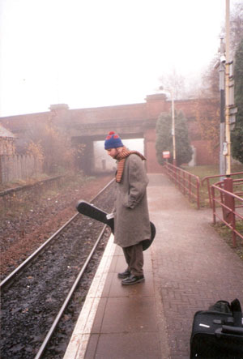

Jester-Knight
Literature
Film
Music
Visual Art
Tributes
Submissions
Links
Contact
Patrick Porter

Biography
Patrick Porter is a pseudonym for Skylan Mo is an antonym for Patrick Porter. Born in the backalley of a crackerbox in Schenectady NY as the 55 bus chivvied the slush. Leafy brittle neon on cracked panes let the White Owl out. Henry suffered financial reverses, grew ill, and finally died in 1913. Enrolled in a Catholic elementary school and was treated accordingly. Father drove drunk over railroad tracks in Murfreesboro TN and the muffler was amputated from the flank. Tall weeds in traileryard, Porter cried and was scared of sunflowers. His first memory is of a K-Mart sign in Huntsville AL. He removed a wad of gum from his mouth, ran it over with a dirtbike tire, and placed the wad into his mouth a-fresh. Mountains are cold and drip with lonely old mailbox roads. Here Porter pulled his pubes, pounded his head on a punkrock and befriended many Beavis & Buttheads. A tiny nitelight out in the distance, in the woods, in a miner's town where teenagers go and drink pints in cold old shafts (signs with skulls & crossbones on em). Then adulthood & etc etc. Currently Mr. Porter cum MO is 87 years old and hobbles around X-mas parades gumming his cane and waiting in line to buy hot choco. He has written a million pounds of poetry and two novels and 5 record indie albums (sans indie smarm glasses) of John Denver hilarious sincerity. He has also wrecked two cars, consumed 583 hot pockets, popped pimples in the mirrors of 56 greyhound buses, engaged in 67 failed marriages and has gnawed the end of 87 tethers. His big bad blah boring BAH. He has sung women in three cities.
Electronic enclave is www.myspace.com/patrickportermusic. Here there is stuff, who knows, there are things, of him, that he didn't put there, such as paintings, songs, words, turds, shards, gargles, old toothbrushes. Selah-de-dah.
Click below for Patrick's work
Pomes (.pdf)